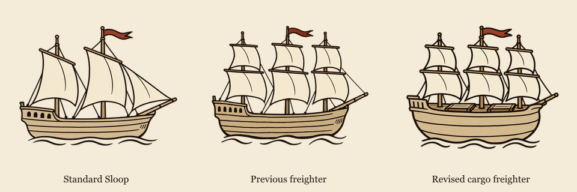
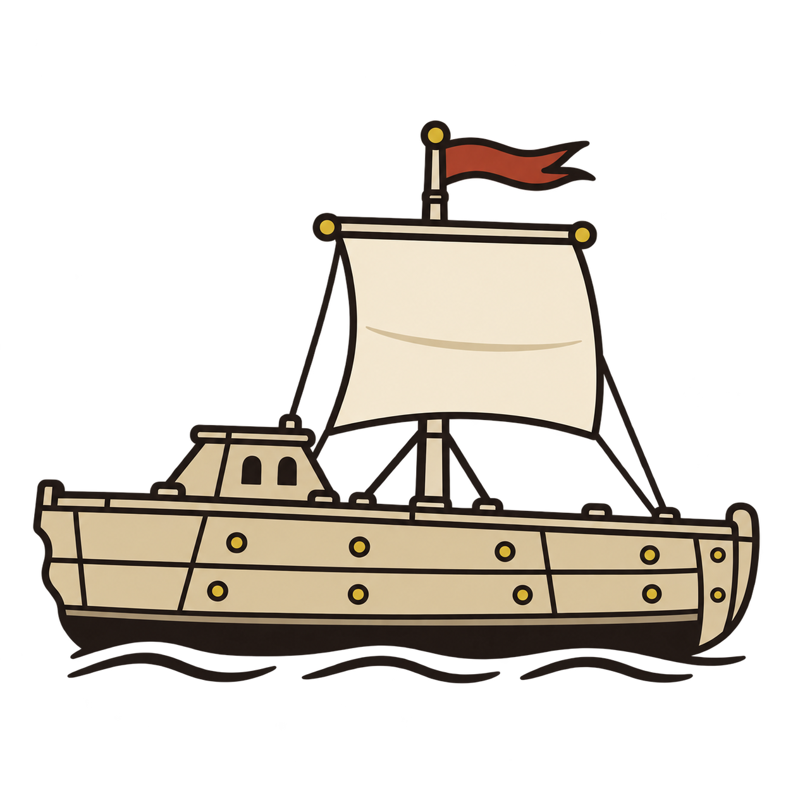
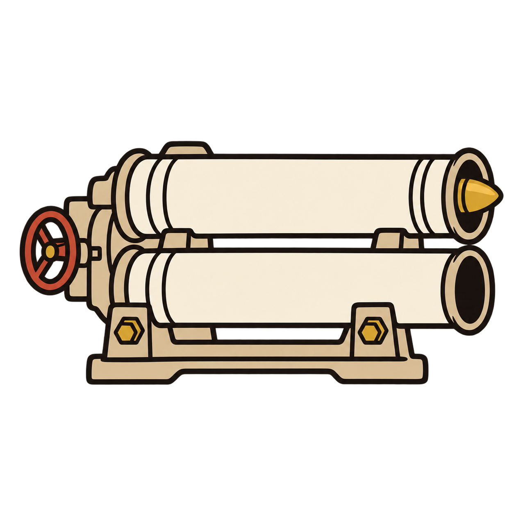
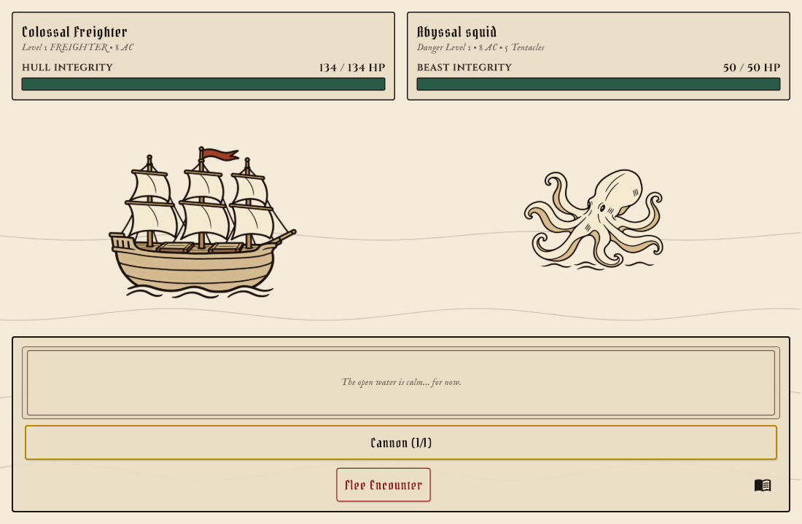
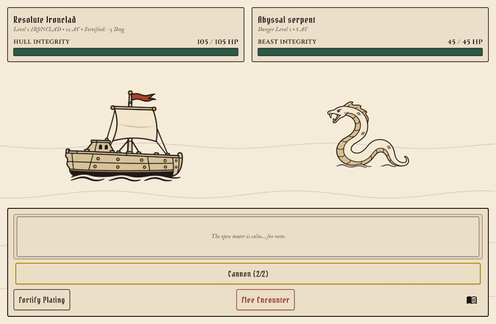

Historical review · Current revisions
The Monstrous Sea — Requested Revisions
Six revised designs use the same simple ink-and-parchment style. The corrected original squid is active in the game. The long-mantle alternative is saved for your review.
53 Flutter tests passed, including transparent image decoding and battle rendering at wide and compact sizes.
Squid options


Freighter silhouette comparison

Heavy Freighter


Shorter, rounder cargo hull with a deep hold and two deck hatches.
Ironclad



Conventional bow without a ram, plus one deck-rooted mast carrying a square sail.
Squid — corrected original

The approved rounded silhouette remains, with all sucker markings removed.
Unstable Tincture
Stormy amber liquid, a fiery swirl, and lightning replace the venom label.
Torpedo Launcher


Only the torpedo nose protrudes from the upper muzzle; its body is inside the tube.
Flamethrower

A larger flared spout sits on a tall mount and sends its plume upward.
Small equipment icons
Each group shows 22, 36 and 48 pixels from left to right.
Battle previews



